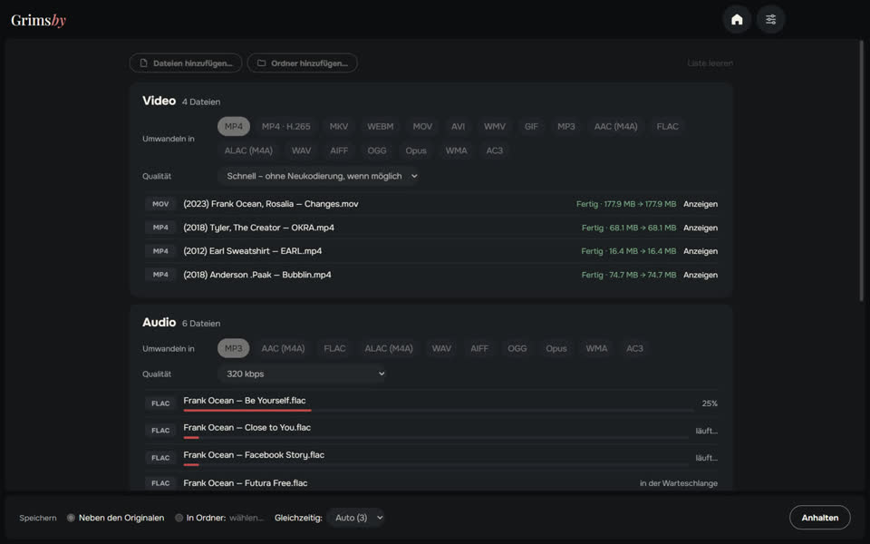
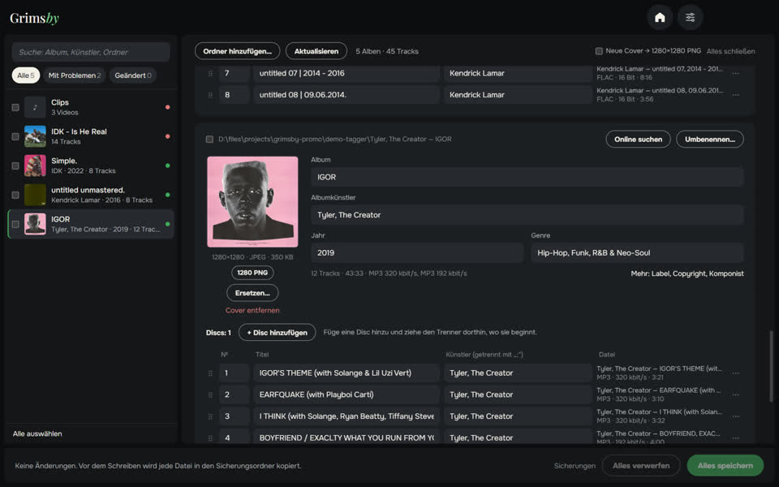

Drei kostenlose Offline-Apps im gleichen Stil – für alle, die ihre eigene Musikbibliothek pflegen.

Grimsby Player
Offline-Player für deine heruntergeladene Musik und Videos
Ein Player für alle, die Musik herunterladen und sammeln. Wähle deinen Musikordner, und deine Sammlung wird zu einer Bibliothek wie bei einem Streamingdienst: Alben nach Jahr, Interpretenseiten, Musikvideos neben den Alben. Alles bleibt auf deinem Computer – ohne Konto, ohne Abo, ohne Werbung.
- Alben nach Erscheinungsjahr und Interpretenseiten mit Alben, Videos, Konzerten und Features
- Musikvideos, Konzerte und Albumfilme werden automatisch den Alben zugeordnet
- Lückenlose Wiedergabe, Lautstärkeangleichung und 10-Band-Equalizer
- Intelligente Radio-Playlists, die sich selbst zusammenstellen
- Hör- und Sammlungsstatistik, Albumstatistik und Jahresrückblick
- Konverter, Duplikatsuche und Bibliotheksprüfung eingebaut

Grimsby Converter
Videos, Audio, Fotos und Dokumente – offline umwandeln
Ein Dateikonverter, der direkt auf deinem Computer arbeitet. Zieh Dateien und ganze Ordner bunt gemischt hinein: Sie werden in Gruppen sortiert, jede Gruppe bekommt ihr eigenes Format und ihre Qualität, und alles wird mit einem Klick umgewandelt. Nichts wird irgendwohin hochgeladen.
- Videos, Audio, Fotos, Dokumente, Tabellen und Präsentationen in einem Fenster
- Ganze Ordner auf einmal, automatisch in Gruppen sortiert
- Schnellmodus: MOV zu MP4 in Sekunden ohne Qualitätsverlust
- Dutzende Formate: von DSD-Audio und M4B-Hörbüchern bis Photoshop-PSD und Keynote
- Originale bleiben unverändert; keine Größenlimits, keine Wasserzeichen
- Mehrere Dateien gleichzeitig – so viele, wie dein Prozessor schafft


Grimsby Tagger
Tag-Editor für ganze Alben: Tags, Cover, Dateinamen
Ein Tag-Editor für deine Musikbibliothek, der albumweise arbeitet statt Datei für Datei. Wähle einen Ordner – er sortiert die Dateien in Alben, zeigt jedes als Karte mit Cover und hebt hervor, was nicht stimmt. Korrigiere alles und speichere mit einem Klick.
- Alben ordnen sich selbst: CDs, Editionen und lose Dateien
- Probleme auf einen Blick: leere Felder, uneinheitliche Werte, fehlende Cover, kaputte Zeichenkodierung
- Korrekturen mit einem Klick aus Datei- und Ordnernamen
- Album online finden und die Titel deinen Dateien zuordnen
- Dateien und Ordner nach Vorlage umbenennen – mit Rückgängig
- Auch Videos: MP4, MKV, MOV und mehr – Tags und Cover, ohne Neukodierung
